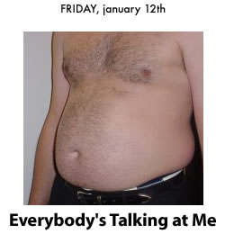

Sup
01/13/2007 12:12:17 AM

Tonight I had a bit of a marital discordance with H over the subject of why don't I ever want to leave the house and where would we go if I ever did want to. Over the past few weeks H has suggested several opportunities to go out and actually experience things that happen in Las Vegas that are not casino or dry cleaning related. My response to those suggestions has been:
egh.
H listed three of these opportunities, and I responded with explanations of why those opportunities fell short of the mark.
Opportunity: Stargazing somewhere out in the mountains surrounding Las Vegas.
Reason for Not Going: Ever since I got that Lasik surgery on my eyes, my night vision sucks and lights at night take on annoying halos. Therefore stargazing is dead for me because all I can ever see is blurry hazes. Also, I refuse to believe that there is any location within minutes of Las Vegas where you can actually see any celestial objects through the purple haze of neon glare from the Strip.
Opportunity: Theater production of
Wake Up and Smell the Coffee, a one-man play written by Eric Bogosian.
Reason for Not Going: Come on man! First of all, I hate one-man plays because usually it's just some guy standing on stage and ranting for two hours. Who needs the stress? If I want ranting I can read weblogs. The only one-man show I'm interested in is those that are about some famous person like Mark Twain or Abe Lincoln, you know, the kind that Hal Holbrook used to be in all the fucking time.
Opportunity: Jewish film festival at the Suncoast.
Reason for Not Going: "Whaat...you're gonna marry a shiksa??"
Anyway, this is just a long way around to saying that H totally demolished my stupid reasons for not wanting to do any of the stuff that she suggested. Yeah, I guess I really need to get out more. Whatever!
Fun Fact: Ever since I lived in Seattle, every city I've lived in has had progressively worse and worse bookstores. The best Borders I've ever hung out at has been the one in Tukwila, WA.
COMMENT:
AUTHOR: marshmallow
EMAIL: pmarshmallow@gmail.com
IP: 66.171.90.15
URL: http://www.tabulas.com/~koyangi
DATE: 01/17/2007 09:30:35 PM
MH and i have had these conversations before. i think men get comfortable around their domestic habitat more than women do.
anyway becoz MH is such an accommodating guy we go out more often (altho not always together). i strongly recommend it.